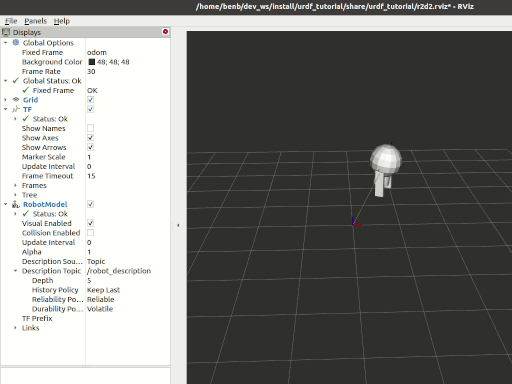

備註
您正在閱讀開發版本的文件。對於最新發行的版本，請參見 Lyrical。
Using URDF with robot_state_publisher (C++)
Goal: Simulate a walking robot modeled in URDF and view it in Rviz.
教學等級： 中級
Time: 15 minutes
背景
This tutorial will show you how to model a walking robot, publish the state as a tf2 message and view the simulation in Rviz.
First, we create the URDF model describing the robot assembly.
Next we write a node which simulates the motion and publishes the JointState and transforms.
We then use robot_state_publisher to publish the entire robot state to /tf.

先備條件
As always, don't forget to source ROS 2 in every new terminal you open.
Tasks
1 建立軟體包
Go to your ROS 2 workspace and create a package named urdf_tutorial_cpp:
$ cd src
$ ros2 pkg create --build-type ament_cmake --license Apache-2.0 urdf_tutorial_cpp --dependencies rclcpp geometry_msgs sensor_msgs tf2_ros tf2_geometry_msgs
$ cd urdf_tutorial_cpp
You should now see a urdf_tutorial_cpp folder.
Next you will make several changes to it.
2 建立 URDF 檔案
Create the directory where we will store some assets:
$ mkdir -p urdf
$ mkdir -p urdf
$ md urdf
Download the URDF file and save it as urdf_tutorial_cpp/urdf/r2d2.urdf.xml.
Download the Rviz configuration file and save it as urdf_tutorial_cpp/urdf/r2d2.rviz.
3 發布狀態
Now we need a method for specifying what state the robot is in.
To do this, we must specify all three joints and the overall robot geometry.
Fire up your favorite editor and paste the following code into
urdf_tutorial_cpp/src/urdf_tutorial.cpp
#include <rclcpp/rclcpp.hpp>
#include <geometry_msgs/msg/quaternion.hpp>
#include <sensor_msgs/msg/joint_state.hpp>
#include <tf2_ros/transform_broadcaster.hpp>
#include <tf2_geometry_msgs/tf2_geometry_msgs.hpp>
#include <cmath>
#include <thread>
#include <chrono>
using namespace std::chrono;
class StatePublisher : public rclcpp::Node {
public:
StatePublisher(rclcpp::NodeOptions options=rclcpp::NodeOptions()):
Node("state_publisher", options){
joint_pub_ = this->create_publisher<sensor_msgs::msg::JointState>("joint_states",10);
// create a publisher to tell robot_state_publisher the JointState information.
// robot_state_publisher will deal with this transformation
broadcaster = std::make_shared<tf2_ros::TransformBroadcaster>(this);
// create a broadcaster to tell the tf2 state information
// this broadcaster will determine the position of coordinate system 'axis' in coordinate system 'odom'
RCLCPP_INFO(this->get_logger(),"Starting state publisher");
timer_=this->create_wall_timer(33ms,std::bind(&StatePublisher::publish,this));
}
private:
rclcpp::Publisher<sensor_msgs::msg::JointState>::SharedPtr joint_pub_;
std::shared_ptr<tf2_ros::TransformBroadcaster> broadcaster;
rclcpp::TimerBase::SharedPtr timer_;
// Robot state variables (one degree in radians)
const double degree = M_PI/180.0;
double tilt = 0.;
double tinc = degree;
double swivel = 0.;
double angle = 0.;
double height = 0.;
double hinc = 0.005;
void publish();
};
void StatePublisher::publish(){
// create the necessary messages
geometry_msgs::msg::TransformStamped t;
sensor_msgs::msg::JointState joint_state;
const auto ts = this->get_clock()->now();
joint_state.header.stamp = ts;
// Specify joints' name which are defined in the r2d2.urdf.xml and their content
joint_state.name={"swivel","tilt","periscope"};
joint_state.position={swivel,tilt,height};
// add time stamp
t.header.stamp = ts;
// specify the father and child frame
// odom is the base coordinate system of tf2
t.header.frame_id="odom";
// axis is defined in r2d2.urdf.xml file and it is the base coordinate of model
t.child_frame_id="axis";
// add translation change
t.transform.translation.x=cos(angle)*2;
t.transform.translation.y=sin(angle)*2;
t.transform.translation.z=0.7;
tf2::Quaternion q;
// euler angle into Quaternion and add rotation change
q.setRPY(0,0,angle+M_PI/2);
t.transform.rotation.x=q.x();
t.transform.rotation.y=q.y();
t.transform.rotation.z=q.z();
t.transform.rotation.w=q.w();
// update state for next time
tilt+=tinc;
if (tilt<-0.5 || tilt>0.0){
tinc*=-1;
}
height+=hinc;
if (height>0.2 || height<0.0){
hinc*=-1;
}
swivel+=degree; // Increment by 1 degree (in radians)
angle+=degree; // Change angle at a slower pace
// send message
broadcaster->sendTransform(t);
joint_pub_->publish(joint_state);
RCLCPP_INFO_THROTTLE(this->get_logger(), *this->get_clock(), 1000, "Publishing joint state");
}
int main(int argc, char * argv[]){
rclcpp::init(argc,argv);
rclcpp::spin(std::make_shared<StatePublisher>());
rclcpp::shutdown();
return 0;
}
This node does two things:
- Publishes JointState message to the /joint_states topic so that robot_state_publisher can compute all the per-joint transforms and broadcasts them via /tf.
- Broadcasts a single root transform that places the robot model (axis frame) in the world (odom frame), making the whole robot walk in a circle.
4 Create a launch file
Create a new urdf_tutorial_cpp/launch folder.
Open your editor and paste the following code, saving it as urdf_tutorial_cpp/launch/launch.py
from source.Capabilites.Simulation.URDF.launch.launch import LaunchDescription
from launch.actions import DeclareLaunchArgument
from launch.substitutions import FileContent, LaunchConfiguration, PathJoinSubstitution
from launch_ros.actions import Node
from launch_ros.substitutions import FindPackageShare
def generate_launch_description():
# ''use_sim_time'' is used to have ros2 use /clock topic for the time source
use_sim_time = LaunchConfiguration('use_sim_time', default='false')
urdf = FileContent(
PathJoinSubstitution([FindPackageShare('urdf_tutorial_cpp'), 'urdf', 'r2d2.urdf.xml']))
return LaunchDescription([
DeclareLaunchArgument(
'use_sim_time',
default_value='false',
description='Use simulation (Gazebo) clock if true'),
Node(
package='robot_state_publisher',
executable='robot_state_publisher',
name='robot_state_publisher',
output='screen',
parameters=[{'use_sim_time': use_sim_time, 'robot_description': urdf}],
arguments=[urdf]),
Node(
package='urdf_tutorial_cpp',
executable='urdf_tutorial_cpp',
name='urdf_tutorial_cpp',
output='screen'),
])
5 Edit the CMakeLists.txt file
You must tell the colcon build tool how to install your cpp package.
Edit the CMakeLists.txt file as follows:
cmake_minimum_required(VERSION 3.20)
project(urdf_tutorial_cpp)
if(CMAKE_COMPILER_IS_GNUCXX OR CMAKE_CXX_COMPILER_ID MATCHES "Clang")
add_compile_options(-Wall -Wextra -Wpedantic)
endif()
# find dependencies
find_package(ament_cmake REQUIRED)
find_package(geometry_msgs REQUIRED)
find_package(sensor_msgs REQUIRED)
find_package(tf2_ros REQUIRED)
find_package(tf2_geometry_msgs REQUIRED)
find_package(rclcpp REQUIRED)
add_executable(urdf_tutorial_cpp src/urdf_tutorial.cpp)
target_link_libraries(urdf_tutorial_cpp PUBLIC
geometry_msgs::geometry_msgs
sensor_msgs::sensor_msgs
tf2_ros::tf2_ros
tf2_geometry_msgs::tf2_geometry_msgs
rclcpp::rclcpp
)
install(TARGETS
urdf_tutorial_cpp
DESTINATION lib/${PROJECT_NAME}
)
install(DIRECTORY
launch
DESTINATION share/${PROJECT_NAME}
)
install(DIRECTORY
urdf
DESTINATION share/${PROJECT_NAME}
)
ament_package()
The install(DIRECTORY urdf ...) rule copies both r2d2.urdf.xml and r2d2.rviz into the install tree so they can be found at runtime.
6 Build the package
Return to your workspace root and build:
$ colcon build --symlink-install --packages-select urdf_tutorial_cpp
Source the setup files:
$ source install/setup.bash
$ source install/setup.bash
$ call install/setup.bat
7 檢視結果
To launch your new package run the following command:
$ ros2 launch urdf_tutorial_cpp launch.py
To visualize your results you will need to open a new terminal and run Rviz using your rviz configuration file.
$ rviz2 -d install/urdf_tutorial_cpp/share/urdf_tutorial_cpp/urdf/r2d2.rviz
See the User Guide for details on how to use Rviz.
install/urdf_tutorial_cpp/share/urdf_tutorial_cpp/urdf/r2d2.rviz is the dir where the r2d2.rviz stored.
摘要
Congratulations!
You have created a JointState publisher node and coupled it with robot_state_publisher to simulate a walking robot.